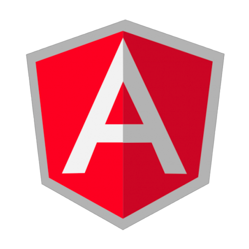

The Super heroic JS MVW Framework
Abstraction tries to reduce and factor out details so that the developer can focus on a few concepts at a time
Developer tools is your best friend!
... If in doubt, do console.log() ...
<script src="https://code.angularjs.org/1.4.7/angular.min.js"></script>
<tag ng-app></tag>
<html ng-app>
// this area is controlled by Angular
</html>
<product-dir></product-dir>
<span data-product-dir="exp"></span>
<!-- directive: product-dir exp -->
<span class="product-dir: exp;"></span>
See how Angular normalize the directive name? The normalization process is as follows:
App.directive('productDir', function() {
return {
template: 'This product directive ;)'
};
});
<product-dir></product-dir>
App.controller('ProductController', ['$scope', function($scope) {
$scope.products = [
{ name: 'Helm', price: 200000},
{ name: 'Ban Motor', price: 100000},
{ name: 'Selang', price: 25000}];
}])
.directive('productList', function() {
return {
controller: 'ProductController',
restrict: 'E', // 'A' = attribute, 'E' = element, 'C' = class
templateUrl: 'includes/product-list.html'
};
});
includes/product-list.html
<ul class="list">
<li ng-repeat="product in products">
{{ product.name }} : {{ product.price }}
</li>
</ul>
<product-list></product-list>
usefull for code sharing and organization across the application.
Singleton, Lazily instantiatedprovides communication with remote HTTP servers
helps you to run function asynchronously and return as a promise
angular.factory('serviceName', function() {
var obj;
// some logic here
return obj;
});
angular
.module('App', ['ngRoute'])
.config(['$routeProvider', function ($routeProvider) {
$routeProvider
.when('/', {
templateUrl : 'partial/index.html',
controller: 'MainController'
})
angular
.config(['$routeProvider', function($routeProvider) {
$routeProvider
.when('/order/:id', {
templateUrl: 'templates/order-detail.html',
controller: 'OrderController'
})
}])
.controller('OrderController', ['$scope', '$route', '$posOrder', function ($scope, $routeParams, $posOrder) {
$scope.params = $routeParams;
$scope.orders = [];
$posOrder.getById($scope.params.current.params.id).then(function(result) {
$scope.orders = result.data;
})
}])